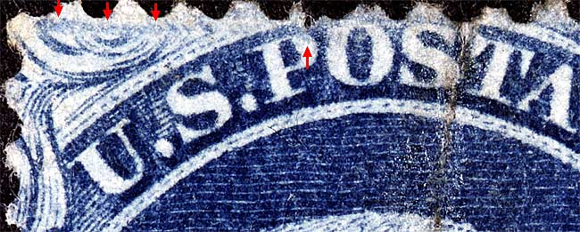
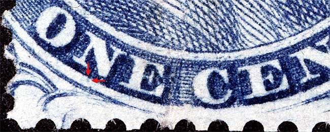
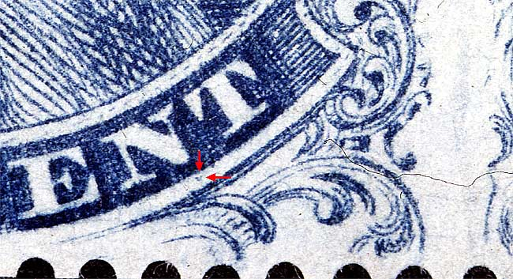
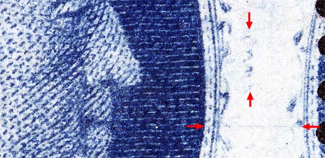

1¢ Franklin Issue of 1851-1857, PLATE 4
Position 46L4
Type III, Relief E
Issued both imperforate (Scott 8) and perforated (Scott 21).
Courtesy of Tim McRee
Plating Notes:
Additional plating marks can be found to the left and center of Ornament H and a vertical blur can be found between the balls of Ornaments F/G.
Dots or squiggle in the right margin. These marks, no doubt from foreign matter adhering to the transfer roll, occur on many E relief positions, some but not all of which are illustrated on the Neinken mats.
It should also be noted that Ornaments E/F/G are extraordinarily short, much shorter than the Neinken mat indicates. This is very helpful for plating this position. See figure 5 below.





Thanks for visiting this site. I hope you learn something new as we are making new discoveries all the time. You, the visitor, have my permission to link to my pages and to share the INFORMATION with others. The images themselves fall under the fair use guidelines established by the United States Congress and Copyright law. Basically contact us before using. I also ask in return that you send me an e-mail if I have made a mistake, or have made some other technical blunder that in my rush to put these pages up would cause the visitor confusion. Please also visit my other website at www.slingshotvenus.com. and support the live music arts. While your there, be sure to purchase our music. There are not many philatelic rock stars around and we need all the help we can get. :-)
I can be reached at: nerdman@ix.netcom.com
Copyright © 2001-2010 Richard Doporto, Sonic Imagery Labs Updated
April 29th 2009